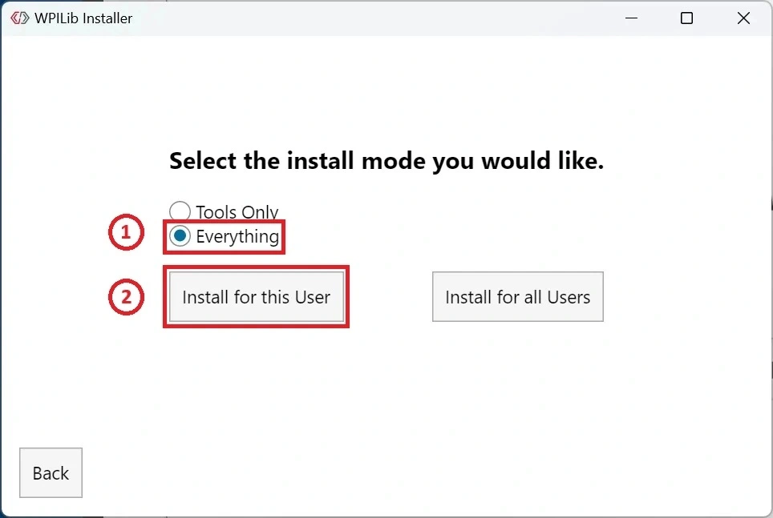
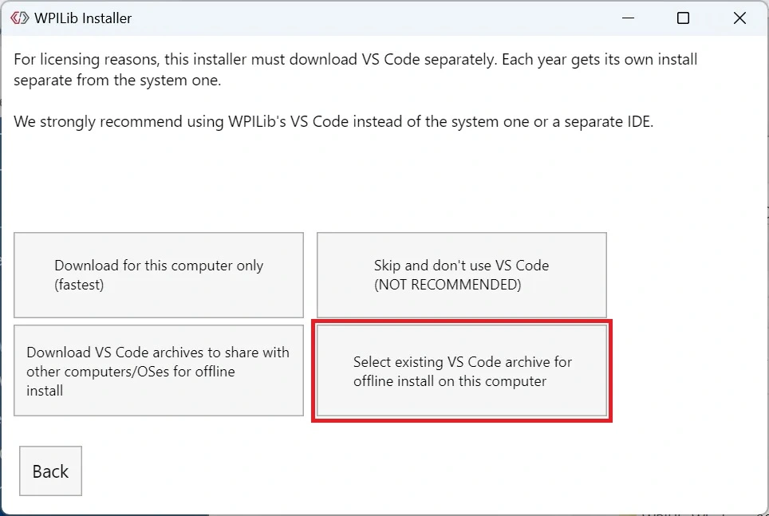
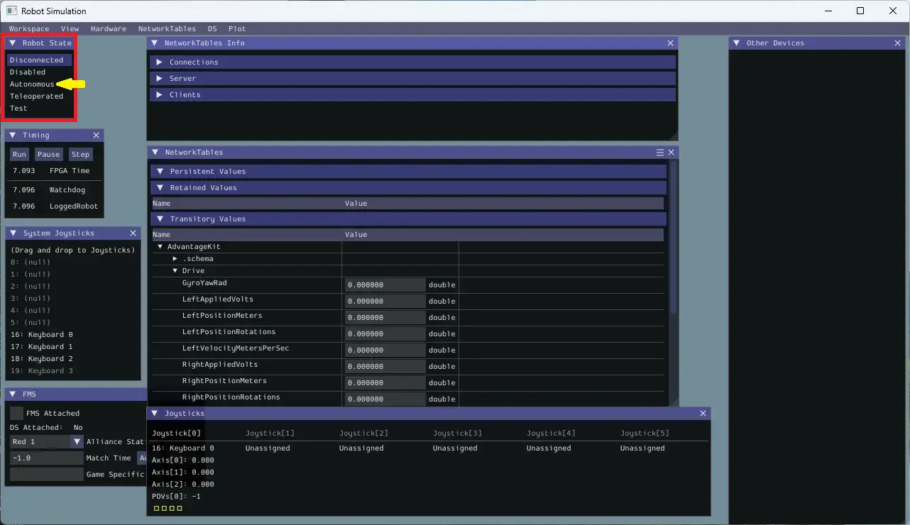

You're about to install WPILib VS Code and WPILib start tools, build a project, and drive a robot that doesn't physically exist.
WPILib is a big install. Gradle downloads every dependency on the first build. It's slow, but these are the tools we need!
What "done" looks like today
Six things need to work before you leave. We're going to do them in order. Each one builds on the last.
1. WPILib + VS Code installed
The official FRC editor with all the robot tools built in.
Includes Java, libraries, build tools - one big install.
2. Starter project builds
Open the project, hit build, see BUILD SUCCESSFUL.
If this works, your code is ready to run in simulation.
3. Simulator runs
Simulate the robot code that was just built, control robot modes, map joystick or keyboard to control the robot, and see robot data.
No XRP needed today.
4. AdvantageScope launches
Included with WPILib. Lets you see what the robot is doing in real time.
If WPILib is the workshop, AdvantageScope is the dashboard.
5. AdvantageScope shows values
Connect to the simulator, drag a value onto the graph, watch it move.
If the number moves when you drive, everything is wired up correctly.
6. AdvantageScope simulates in 2D/3D
Add the robot pose to the 2D/3D view and control the robot!
If the robot moves on the screen when you drive, your pose data is making it all the way through.
7. You can find the reference card
Two-page PDF cheat sheet. Saved somewhere you'll actually find it again.
You'll use this every session from now on.
Windows, Mac, and Linux are supported. Instructions below cover windows.
It happens. Java gets confused, firewalls block downloads, antivirus quarantines installers. If yours breaks and you've spent more than 15 minutes on one issue, switch to a backup laptop and keep going. You can troubleshoot your own machine later with a mentor.
Everyone leaves with something working - even if it's on a borrowed laptop.
What's on the USB drive
Everything you need is on the USB drive your mentor gave you. Copy all four files to your laptop before you start.
- WPILib installer - Windows
.exe - VS Code zip file - Windows
.zip - Starter project ZIP -
FRC-XRP-Starter.zip - Reference card -
XRP-Reference-Card.pdf
Pick the right OS version. If you grab the wrong one, the installer won't run.
Install WPILib + VS Code
WPILib is the official FRC software suite. It includes a special version of VS Code, the Java runtime you need, and every library used by FRC robot code. One installer, everything you need.
The WPILib installer is about 1.5 GB and takes 10-15 minutes to extract and install. If nothing seems to be happening, it's probably still working. Don't cancel it.
1. Double-click WPILib_Windows-2026.x.x.exe on your USB drive (the version number may differ)
2. If Windows asks "Do you want to allow this app to make changes?" → click Yes
3. If Windows SmartScreen blocks it → click More info, then Run anyway
4. Keep the default install path. Don't change it.
5. When asked: Select the install mode you would like.. Select Everything.

6. When asked: Download VS Code. Select existing VS Code archive for offline install on this computer.

7. Click Execute Install and wait. The progress bar moves slowly.
When the installer finishes, launch WPILib VS Code 2026 from your Start menu (Windows). VS Code opens with a WPILib theme - that's how you know it's the right one.
If you already had VS Code installed, you now have two of them. Regular VS Code and WPILib VS Code. They look almost identical, but only the WPILib one has the robot tools.
Always use WPILib VS Code 2026 for this curriculum. Pin it to your taskbar or dock so you don't accidentally open the wrong one.
WPILib is installed and AdvantageScope is ready to launch. Next we'll open the starter project and verify your environment can actually compile robot code.
The starter project is a complete, working robot program. Today you're opening it and verifying your environment can compile it and run in the simulator. You'll explore what's actually inside in Lesson 02.
Step 1 - Extract the ZIP
- Find
FRC-XRP-Starter.zipon your USB drive - Copy it to your Documents folder (or wherever you keep code)
- Right-click → Extract All on Windows
- You should now have a folder named
FRC-XRP-Starter
Some operating systems will let you "browse" inside a ZIP file like it's a folder. That's not the same as extracting. If you skip the extract step, nothing else in this lesson will work. Make sure you actually have a real folder, not just a window into the ZIP.
Step 2 - Open the folder in WPILib VS Code
- Launch WPILib VS Code 2026 (the WPILib one - not regular VS Code if previously installed.)
- Click File → Open Folder
- Navigate to your extracted
FRC-XRP-Starterfolder - Click Select Folder
VS Code will ask if you trust the authors. Click Yes, I trust the authors.
You should see a file tree on the left with folders like src, files like build.gradle, and a .wpilib folder. If you see those, the project is open correctly.
Step 3 - Build the project
This is the moment of truth. If the build works, your environment is healthy.
1. Press Ctrl+Shift+P (Windows)
2. Type WPILib: Build Robot Code
3. Press Enter
4. Watch the terminal at the bottom of VS Code
The first build is slow - Gradle is downloading every library the project uses. Subsequent builds will be fast. When it finishes successfully, you'll see BUILD SUCCESSFUL in the terminal output.
You compiled real robot code. The Java source files in src/main/java were turned into runnable bytecode. This is the same process you'll run every time you change anything in the project. You don't need to know how it works yet - just know that this is the loop: edit code, build, see if it works.
Check these in order:
1. Are you in WPILib VS Code, not regular VS Code?
2. Did you open the folder, not just a single file?
3. Did the extract actually create a real folder?
4. Is your internet working? Gradle needs to download dependencies on first build.
If all of those are fine and it's still failing, ask a mentor.
This is the part you've been working toward. You're going to start the simulator, drive a virtual robot with your keyboard, and see logged values move in real time on a graph. After this, everything else in the curriculum is downhill.
90% of bugs are logic bugs, not hardware bugs. The simulator catches them faster and cheaper, without risk of the robot driving into the scoring table in front of the head referee. Real teams do this. It's not a beginner shortcut.
Step 1 - Start the simulator
1. In VS Code, press Ctrl+Shift+P (Windows)
2. Type WPILib: Simulate Robot Code
3. Press Enter
4. When prompted, check halsim_gui and click OK
5. Wait for the build (it's quick this time - already compiled)
6. A new window will appear: the Simulation GUI

Step 2 - Set up keyboard driving
1. Find the System Joysticks panel in the Simulation GUI
2. Drag Keyboard 0 from System Joysticks into the Joysticks panel (slot 0)

3. Find the Robot State panel → click Teleoperated → click Enable

W or ↑
Drive forward
S or ↓
Drive backward
A or ←
Turn left
D or →
Turn right
The Simulation GUI by itself doesn't show the robot moving - that's what AdvantageScope is for. The robot is receiving your commands. You'll see the proof in a moment.
Step 3 - Connect AdvantageScope
Keep the simulator running. Open AdvantageScope (don't close VS Code).
1. In AdvantageScope: File → Connect to Simulator (or Ctrl+K)
2. Look at the bottom-left corner - it should say Connected
3. The left sidebar should populate with log keys (you'll see Drive/, AdvantageKit/, etc.)
Connect AdvantageScope BEFORE driving so you don't miss any data.
4. Click on the Simulation GUI window so it has keyboard focus
Step 4 - Drag values onto the graph
The left sidebar in AdvantageScope is now populated with every value your robot is logging. We'll graph two of them.
- In the left sidebar, expand Drive
- You'll see fields like
LeftVelocityRadPerSec,RightVelocityRadPerSec - Drag
LeftVelocityRadPerSeconto the main graph area - Drag
RightVelocityRadPerSeconto the same graph
Step 5 - Drive and watch
- Click back to the Simulation GUI window (so it has focus)
- Make sure Teleoperated is still enabled
- Press and hold W for a couple seconds, then release
- Switch to AdvantageScope
- The graph should show both velocity lines spike up while you held W, then fall back to zero
You ran robot code without a robot. You drove a virtual machine with your keyboard. You logged sensor values to disk and graphed them in real time.
If you understand nothing else from today, understand this: code → build → simulate → drive → watch values is the loop. You'll run it hundreds of times.
Quick check
Why do we use the simulator instead of deploying to a real robot every time we test code?
Robot doesn't respond to keys: Click on the Simulation GUI window to give it focus. Make sure Teleoperated is still enabled (it disables when the simulator restarts).
AdvantageScope won't connect: The simulator must be running first. Check the bottom-left of AdvantageScope.
Values aren't changing: Did you drag the right fields? You want Drive/LeftVelocityRadPerSec and Drive/RightVelocityRadPerSec - not Setpoints.
Still stuck: Ask a mentor. This is a moment to get help, not to grind.
Save the reference card
The reference card is a two-page cheat sheet for the XRP curriculum. It has the most-used methods, the unit conversions you'll forget, and the core patterns for writing subsystems. You'll use it constantly. Memorizing it is not the goal - knowing where to look things up is.
- Find
XRP-Reference-Card.pdfon the USB drive - Copy it to the same folder where you extracted the starter project - that way it's right next to your code
- Open it in your PDF reader to verify it works
Find these sections in the reference card
Spend two minutes locating each of the following. You don't have to read them today - just know they exist.
- XRP Drivetrain methods -
arcadeDrive(),getLeftEncoderDistance(), etc. - Common unit conversions - inches to meters, radians to degrees
- AdvantageKit logging pattern - the three-line pattern in every subsystem
- CommandScheduler call - the line that must be in
robotPeriodic()
Before you ask a mentor "how do I do X?", check the reference card first. The best programmers look things up first. Build that habit now.
Setup checklist - before you leave today
Run through this list. Every one of these should be true before you leave today.
- WPILib VS Code opens
- AdvantageScope opens
- Starter project builds successfully (
BUILD SUCCESSFUL) - Simulator runs and the robot responds to keyboard
- AdvantageScope says Connected and shows velocity values changing when you drive
- Reference card is saved somewhere you'll find it
Don't try to power through it. The whole rest of the curriculum assumes these six things work. Use a backup laptop today and troubleshoot your own machine before Lesson 02. A working setup on a borrowed laptop is better than a broken setup on your own.
You installed a development environment, compiled real robot code, drove a simulated robot, and watched live data on a graph. Every session from here on, this is already done.